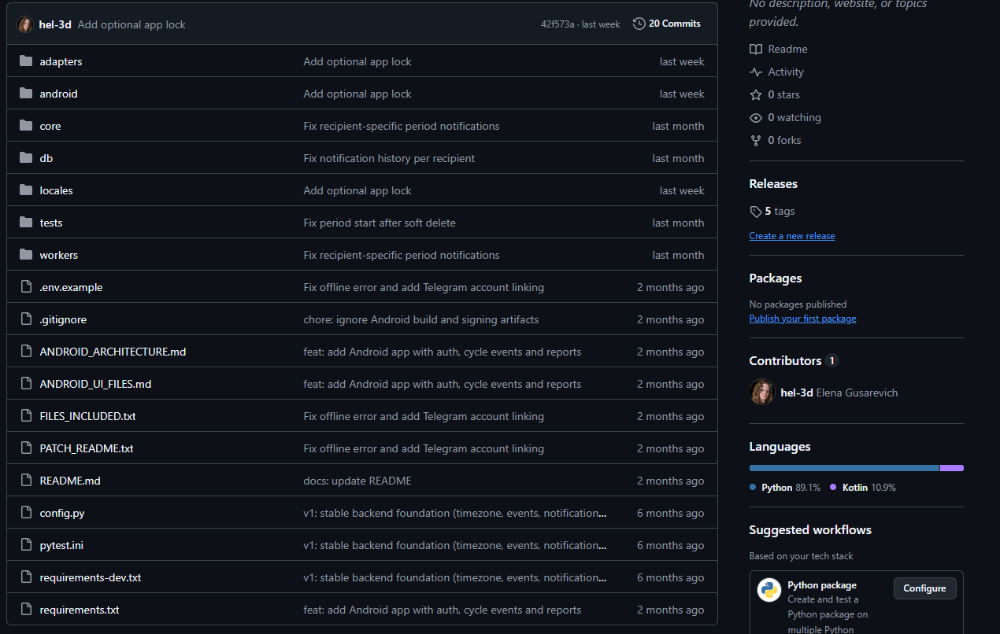
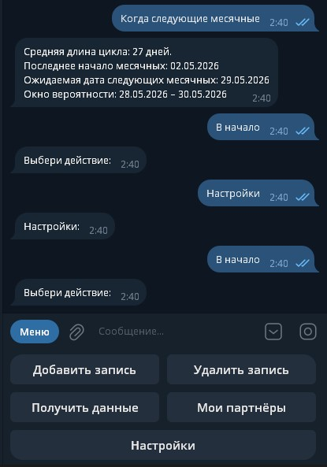
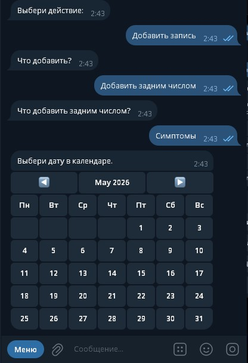
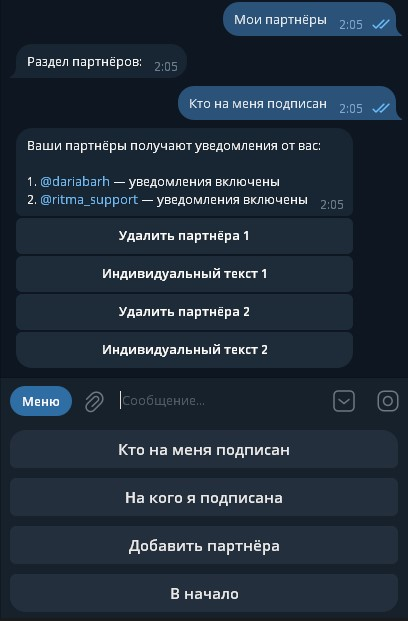
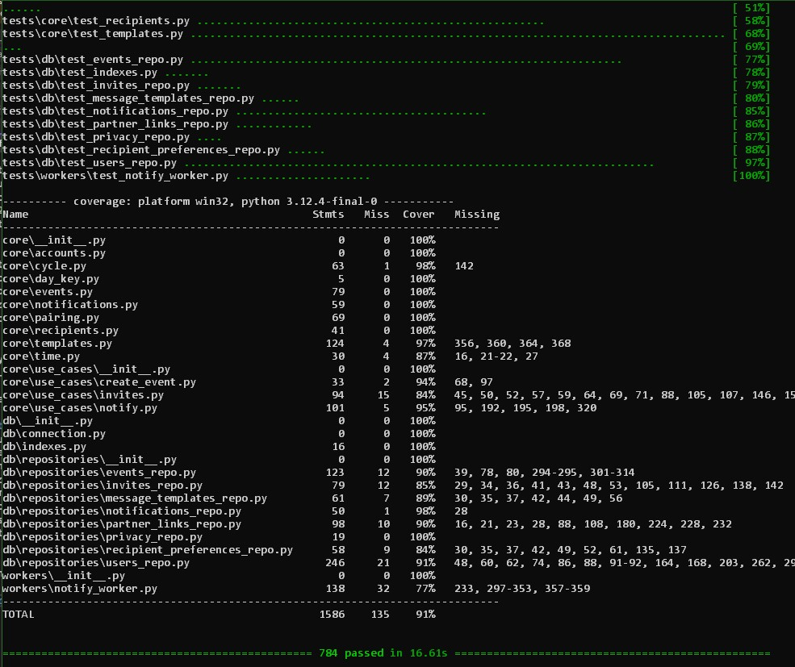

Ritma — Cycle Tracking SaaS with Partner-Aware Notifications
This project started as a simple Telegram bot to track menstrual cycle events. It worked — but the architecture was tightly coupled, state was implicit, and business logic was scattered across handlers.
I rebuilt it as a SaaS-style backend system with explicit domain boundaries: cycle modeling, event storage, notification orchestration, and partner-aware delivery. The goal was not to add features, but to make the system to make the system deterministic, modular, and consistent under real-world data.
The current system supports multi-partner relationships, customizable notification templates, phase-based logic, and strict separation between core business logic and delivery adapters.
Outcome: a production-ready architecture that behaves deterministically under real-world data inconsistencies and supports controlled feature expansion without breaking existing flows.
System Design
- Architecture: Clean architecture · Use cases layer · Repository pattern · Adapter isolation
- Core Features: Multi-partner model · Phase-based notifications · Custom message templates
- Data Model: Events / Notifications / Partner links / Preferences / Templates
Data & Reliability
- Data Safety: Isolated user data · Soft-delete model · Controlled access per recipient
- Reliability: Failure-safe sending · Retry-ready architecture · No duplicate notifications
- Scalability: Async processing · Background workers · Ready for queue integration
- Sync & Identity: Zero-Auth (Anonymous-first) · Bidirectional Timeline Merge
Delivery & Quality
- Engineering Metrics: 784 tests · 91% coverage · 16s runtime
- Localization: 3 Languages (EN · ES · RU)
Architecture
📁 Ritma repository structure
ritma/
├── .env.example
├── .gitignore
├── ANDROID_ARCHITECTURE.md
├── ANDROID_UI_FILES.md
├── AUTH_RECOVERY_SETUP.md
├── FILES_INCLUDED.txt
├── PATCH_README.txt
├── README.md
├── config.py
├── pytest.ini
├── requirements-dev.txt
├── requirements.txt
│
├── adapters/
│ ├── __init__.py
│ ├── http/
│ │ ├── __init__.py
│ │ ├── app.py
│ │ ├── dependencies.py
│ │ ├── email_delivery.py
│ │ ├── schemas.py
│ │ ├── services.py
│ │ └── routes/
│ │ ├── __init__.py
│ │ ├── account_deletion.py
│ │ ├── auth.py
│ │ ├── dashboard.py
│ │ ├── events.py
│ │ ├── linking.py
│ │ ├── me.py
│ │ ├── recovery_auth.py
│ │ └── report.py
│ │
│ └── telegram/
│ ├── __init__.py
│ ├── bot.py
│ ├── helpers.py
│ ├── i18n.py
│ ├── keyboards.py
│ └── handlers/
│ ├── __init__.py
│ ├── backfill.py
│ ├── calendar.py
│ ├── delete_events.py
│ ├── events.py
│ ├── menu.py
│ ├── onboarding.py
│ ├── pairing.py
│ ├── partners.py
│ ├── privacy.py
│ ├── report.py
│ ├── start.py
│ ├── timezone.py
│ └── when.py
│
├── android/
│ ├── .gitignore
│ ├── README.md
│ ├── build.gradle.kts
│ ├── gradle.properties
│ ├── settings.gradle.kts
│ ├── gradle/
│ │ └── wrapper/
│ │ └── gradle-wrapper.properties
│ └── app/
│ ├── build.gradle.kts
│ ├── proguard-rules.pro
│ └── src/
│ ├── debug/
│ │ └── AndroidManifest.xml
│ └── main/
│ ├── AndroidManifest.xml
│ ├── java/
│ │ └── com/ritma/app/
│ │ ├── LocaleUtils.kt
│ │ ├── MainActivity.kt
│ │ ├── RitmaApp.kt
│ │ ├── data/
│ │ │ ├── ApiClient.kt
│ │ │ └── SessionStore.kt
│ │ ├── model/
│ │ │ └── Models.kt
│ │ └── ui/
│ │ ├── auth/
│ │ │ ├── AuthScreen.kt
│ │ │ └── EmailRecoveryScreen.kt
│ │ ├── components/
│ │ │ └── UiHelpers.kt
│ │ ├── dashboard/
│ │ │ └── DashboardScreen.kt
│ │ ├── events/
│ │ │ ├── AddEventDialogs.kt
│ │ │ └── EventsScreen.kt
│ │ ├── profile/
│ │ │ ├── AppLockScreen.kt
│ │ │ └── ProfileScreen.kt
│ │ ├── report/
│ │ │ └── ReportScreen.kt
│ │ └── theme/
│ │ └── RitmaTheme.kt
│ └── res/
│ ├── drawable/
│ │ ├── ic_launcher_background.xml
│ │ └── ic_launcher_foreground.png
│ ├── mipmap-anydpi-v26/
│ │ └── ic_launcher.xml
│ ├── mipmap-hdpi/
│ │ └── ic_launcher.png
│ ├── mipmap-mdpi/
│ │ └── ic_launcher.png
│ ├── mipmap-xhdpi/
│ │ └── ic_launcher.png
│ ├── mipmap-xxhdpi/
│ │ └── ic_launcher.png
│ ├── mipmap-xxxhdpi/
│ │ └── ic_launcher.png
│ ├── values/
│ │ ├── plurals.xml
│ │ ├── strings.xml
│ │ └── styles.xml
│ ├── values-es/
│ │ ├── plurals.xml
│ │ └── strings.xml
│ └── values-ru/
│ ├── plurals.xml
│ └── strings.xml
│
├── core/
│ ├── __init__.py
│ ├── accounts.py
│ ├── cycle.py
│ ├── day_key.py
│ ├── events.py
│ ├── notifications.py
│ ├── pairing.py
│ ├── recipients.py
│ ├── reporting.py
│ ├── templates.py
│ ├── time.py
│ └── use_cases/
│ ├── __init__.py
│ ├── account_linking.py
│ ├── create_event.py
│ ├── invites.py
│ └── notify.py
│
├── db/
│ ├── __init__.py
│ ├── connection.py
│ ├── indexes.py
│ └── repositories/
│ ├── __init__.py
│ ├── account_link_tokens_repo.py
│ ├── account_merge_repo.py
│ ├── android_auth_repo.py
│ ├── events_repo.py
│ ├── invites_repo.py
│ ├── message_templates_repo.py
│ ├── notifications_repo.py
│ ├── partner_links_repo.py
│ ├── privacy_repo.py
│ ├── recipient_preferences_repo.py
│ ├── recovery_auth_repo.py
│ └── users_repo.py
│
├── locales/
│ ├── en.json
│ ├── es.json
│ └── ru.json
│
├── tests/
│ ├── __init__.py
│ ├── conftest.py
│ ├── adapters/
│ │ ├── http/
│ │ │ ├── test_linking.py
│ │ │ └── test_services.py
│ │ └── telegram/
│ │ ├── test_delete_events.py
│ │ ├── test_handlers.py
│ │ ├── test_keyboards.py
│ │ ├── test_onboarding.py
│ │ ├── test_partners.py
│ │ ├── test_privacy.py
│ │ ├── test_report.py
│ │ ├── test_start.py
│ │ ├── test_timezone.py
│ │ └── test_when.py
│ ├── core/
│ │ ├── test_account_linking.py
│ │ ├── test_create_event.py
│ │ ├── test_cycle.py
│ │ ├── test_day_key.py
│ │ ├── test_events.py
│ │ ├── test_invites.py
│ │ ├── test_notifications.py
│ │ ├── test_notify.py
│ │ ├── test_pairing.py
│ │ ├── test_recipients.py
│ │ └── test_templates.py
│ ├── db/
│ │ ├── test_account_merge_repo.py
│ │ ├── test_android_auth_repo.py
│ │ ├── test_events_repo.py
│ │ ├── test_indexes.py
│ │ ├── test_invites_repo.py
│ │ ├── test_message_templates_repo.py
│ │ ├── test_notifications_repo.py
│ │ ├── test_partner_links_repo.py
│ │ ├── test_privacy_repo.py
│ │ ├── test_recipient_preferences_repo.py
│ │ └── test_users_repo.py
│ └── workers/
│ └── test_notify_worker.py
│
└── workers/
├── __init__.py
└── notify_worker.py
Ritma combines a native Android app and a Telegram bot with a shared backend. The Android app communicates with the service through a FastAPI HTTP API, while the bot handles interactions inside Telegram.
The backend is organized into HTTP and Telegram adapters, business modules and use cases, and a MongoDB repository layer. This structure supports shared workflows for cycle events, account linking, reports, and notifications across both clients.
The API and Telegram bot run as separate services. A background worker prepares and sends scheduled notifications, and Nginx routes incoming API traffic to the local FastAPI service.
In the server configuration observed on October 23, 2026, MongoDB ran in a Docker container and its host port was bound to loopback. This describes the inspected configuration at that time.

Private repository structure showing isolated Telegram adapters, domain logic, repositories, background workers, and a dedicated test suite.
Telegram Product Flow
The current delivery adapter is Telegram, but the interaction model is designed as a product flow rather than a command-only bot. Users can navigate cycle predictions, calendar actions, doctor reports, partner management, and settings through structured menus.
User Actions
- Add or delete cycle-related events
- Check predicted next period
- Open calendar-based input flows
- Generate a doctor-oriented summary report
- Manage settings and privacy actions
Partner Actions
- Create invite links for partners
- See who is subscribed to notifications
- Disable or remove partner access
- Customize notification text per partner
- Control which phase notifications a partner receives



Telegram UI showing the live product flow: main menu, calendar input, and partner-aware notification controls.
Android Client & Store Release
Validation of Hexagonal Architecture: core business logic remained untouched when adding a standalone mobile frontend alongside the Telegram interface.
Ritma — Cycle & Symptoms Tracker
com.ritma.app | Developer: Elena Gusarevich (Hel)Published on Google Play. Features anonymous-first device sessions, client-side encryption options, localized health logging, and bidirectional synchronization with Telegram accounts.
Overview
Ritma is not just a tracker — it is a behavioral system built around time-based biological events. Instead of storing static data, it models temporal sequences and derives phases, predictions, and interaction patterns from them.
The system ingests discrete events (cycle starts, symptoms, interactions), builds an evolving timeline, and computes derived states such as current phase, predicted ovulation window, and expected next cycle.
These states are then used to drive a notification system that adapts both content and delivery targets based on user configuration and partner relationships.
Unlike typical single-user trackers, the system models multi-actor interactions. Each account can have multiple linked recipients (partners), each with independent notification preferences and message customization. This transforms the system from a personal tracker into a multi-recipient communication layer.
A key design constraint was to avoid notification fatigue. The system never sends repeated daily reminders. Instead, notifications are emitted strictly on phase transitions, ensuring that each message represents a meaningful change in state.
What I Built
Core Features
- Event-driven cycle modeling based on real user input rather than fixed schedules
- Phase calculation engine using probabilistic cycle length instead of static assumptions
- Partner-aware notification system with per-recipient preferences and filtering
- Multi-layer message resolution: default → global → per-partner override
- Background worker that emits notifications only on phase transitions (no spam)
- Soft-delete model for events with strict filtering to prevent ghost data in calculations
- Contract-stable core logic independent from Telegram adapter
- Test coverage across core logic, repositories, and worker flows
Responsibilities
- Redesigned MVP architecture into modular SaaS backend
- Separated domain logic from transport layer (Telegram)
- Built notification orchestration with state tracking and anti-duplication logic
- Designed MongoDB schema and indexes for multi-entity relationships
- Implemented safe data handling and minimized sensitive exposure
- Refactored legacy flows to eliminate inconsistent data reads
- Built test suite covering edge cases and real-world data inconsistencies
Technical Details
System Architecture
ApiClient · SessionStore · UI"] TelegramUser["Telegram user"] Bot["Telegram bot
aiogram handlers"] API["FastAPI
auth · events · dashboard · reports
linking · deletion · recovery"] UseCases["Use cases
create_event · account_linking
notify · invites"] Domain["Business modules
cycle · events · notifications
pairing · recipients · reporting · templates"] Repos["MongoDB repositories
users · events · tokens · merges
notifications · preferences · …"] Mongo[("MongoDB")] Worker["Notification worker
workers/notify_worker.py"] TelegramAPI["Telegram Bot API"] Email["Email code delivery
adapters/http/email_delivery.py"] Android -->|"HTTPS / JSON / session"| API TelegramUser --> Bot API -->|"Event creation and account linking"| UseCases API -->|"Some routes access repositories directly"| Repos Bot -->|"Some flows"| UseCases Bot -->|"Some handlers access repositories directly"| Repos UseCases --> Domain UseCases --> Repos Worker -->|"Notification planning"| UseCases Worker --> Repos Worker -->|"Send notifications"| TelegramAPI Repos --> Mongo API -. "Email codes and account recovery" .-> Email Android -. "Requests a linking URL" .-> API API -. "Link token" .-> Repos Bot -. " /start with token" .-> UseCases UseCases -. "Account checks and merge" .-> Repos
Conceptually, the notification engine behaves as a state machine. Each account has an implicit state defined by its current cycle phase, and the system reacts only to state transitions. This allows the system to remain idempotent across repeated worker executions and eliminates the need for complex scheduling logic.
Message resolution follows a multi-layer override model. Each notification is resolved by checking for a partner-specific override, then a global override, and finally falling back to a safe default template. This allows high flexibility without breaking baseline behavior.
Data consistency was a critical challenge. Soft-deleted events initially leaked into calculations because different parts of the system used separate data access paths. Some relied on helper-level queries, others on repository abstractions. This led to subtle inconsistencies where deleted events still influenced cycle predictions.
The issue was resolved by enforcing all reads through repository-level queries with strict filtering rules and eliminating duplicate access patterns. This ensured that business logic operates on a single, consistent view of the data.
The system is designed to tolerate imperfect data. Cycle calculations use recent intervals and avoid overfitting to historical outliers. Predictions are expressed as ranges rather than точные даты, reflecting real-world variability.

Test and coverage output showing 784 passing tests and 91% coverage across core logic, repositories, and workers.
Idempotency is a core requirement of the system. Notifications are generated with deterministic keys, ensuring that repeated executions of the worker do not produce duplicates. This makes the system safe to rerun, retry, or scale horizontally without introducing inconsistent behavior.
The system is extensively tested across all layers: domain logic, repositories, and background workers. Tests cover not only expected flows but also edge cases derived from real-world data inconsistencies, ensuring stable behavior under imperfect input conditions.
Although currently delivered via Telegram, the system is not tied to it. The bot acts as a thin adapter layer. All core logic is transport-agnostic, making it possible to extend the system to web or other messaging platforms without rewriting business logic.
Multi-Channel Timeline Merge & Privacy Architecture
A critical architectural challenge arose when enabling users to operate both via the Android app and the Telegram bot without mandatory registration:
- Zero-Knowledge Anonymous Entry: Users start logging events immediately on Android without email or phone number. A local cryptographically random identifier bounds the initial dataset.
- Deterministic Timeline Merging: When linking a Telegram account to an existing mobile installation, the backend triggers an atomic merge use-case. It re-indexes historical events, validates deduplication keys (
user_id + event_type + day_key), and consolidates the active cycle state machine without dropping records. - GDPR & Right-to-be-Forgotten: Built-in cascades completely purge timelines, active partner linkages, and notification queues across both adapters upon user request, supported by formal privacy endpoints at ritmacalendar.com.
- Biometric App Shielding: Architecture prepared for local biometric and PIN gatekeeping on app resume without storing sensitive passcodes on the server.
Challenges & Solutions
-
Challenge: Inconsistent data due to soft-deleted events appearing in calculations.
Solution: Centralized filtering in repository layer and removed legacy helper-based access.
Result: Deterministic and correct cycle calculations. -
Challenge: Notification spam caused by naive daily execution.
Solution: Introduced phase-transition-based emission with persisted state tracking.
Result: Notifications only fire when meaningful state changes occur. -
Challenge: Conflicting message templates between global and per-partner customization.
Solution: Redesigned database index to include recipient scope and implemented layered resolution logic.
Result: Predictable override hierarchy without data conflicts. -
Challenge: MVP architecture tightly coupled business logic to Telegram handlers.
Solution: Extracted domain logic into core modules and introduced adapter pattern.
Result: System became extensible to other platforms without rewriting logic.
Development Timeline
The system was not built in a single pass. It evolved through several iterations, each focusing on a specific layer: architecture, data model, notifications, and user interaction flows.
v1.0 — Architecture Foundation
- Core architecture separated from Telegram handlers
- Initial domain model (users, events)
- Repository layer introduced
- Baseline test coverage
v2.0 — SaaS Model
- Multi-user and multi-recipient structure
- Partner links and invite system
- Recipient preferences and isolation
- Full data model stabilization
v2.1 — UX Layer
- Telegram menu redesign
- Partner management UI
- Doctor report generation
- Improved interaction flows
v3.0 — Notification Engine
- Phase-based notification system
- Idempotent notification keys
- Privacy-safe deletion logic
- Custom user and partner messages
v4.0 — Stability & Coverage
- Onboarding flow implemented
- Edge-case handling for real data
- Expanded test coverage to 90%+
- Worker reliability improvements
v5.0 — Runtime & Deployment
- Deployed the backend as continuously running services
- Separated the API, Telegram bot, and notification worker into runtime components
- Improved handling of real-world data and notification flows
v5.1 — Android & Multi-Client Delivery
- Released the native Android app on Google Play (
com.ritma.app) - Added a FastAPI REST API for Android app features
- Implemented Telegram account linking and account-data merging
- Added email sign-in and account recovery flows
- Localized the Android and Telegram interfaces in English, Spanish, and Russian
Each version focused on a specific system layer, allowing controlled growth without breaking existing behavior.
Result
The system evolved from a single-file Telegram bot into a modular backend capable of handling multi-actor interactions, probabilistic state modeling, and controlled notification flows.
It now supports real-world usage scenarios without breaking under inconsistent data, avoids notification spam, and provides a foundation for future extensions such as web interfaces or additional communication channels.
Try the Product
The system is live and can be tested through the Telegram interface. You can explore the full flow — from event tracking to partner-aware notifications.
No installation required — works directly in Telegram.